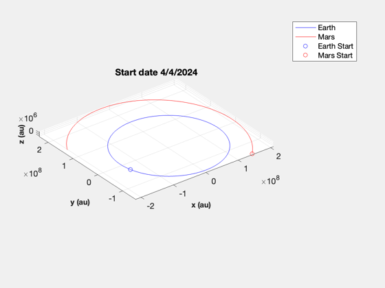
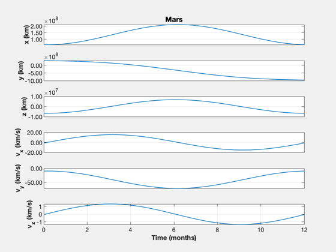
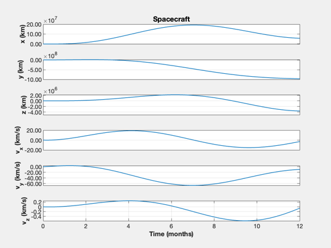
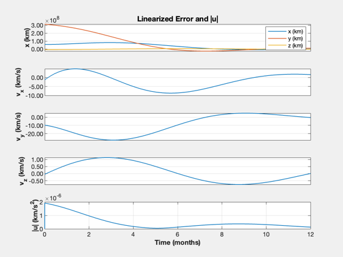
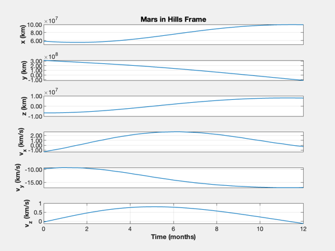
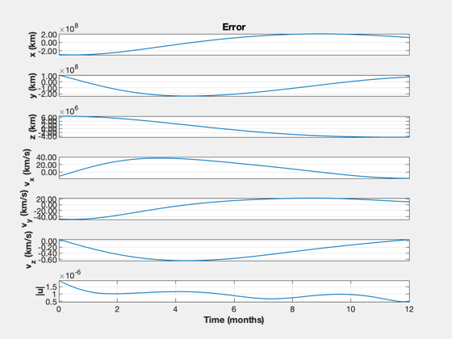
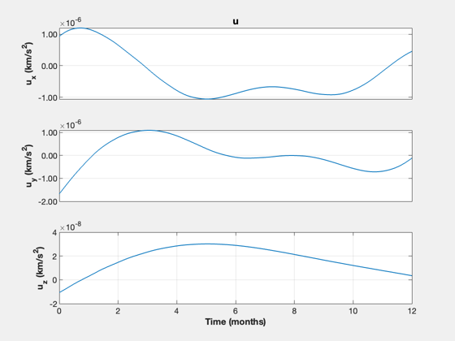

Mars 3D optimal trajectory with a linear regulator
Starts with plotting the Earth and Mars orbits. It then uses an optimal regulator to do the transfer with a linearized orbit. This nulls the error but has no limits on acceleration so requires a high delta-V.
------------------------------------------------------------------------ See also Constant, PlanetPosJPL, NewFig, JD2Date, ECI2Hills, OrbRate, RHSLinOrb, QCR, RK4, TimeHistory ------------------------------------------------------------------------
Contents
%-------------------------------------------------------------------------- % Copyright (c) 2023.1 Princeton Satellite Systems, Inc. % All rights reserved. %-------------------------------------------------------------------------- % Since 2023.1 %--------------------------------------------------------------------------
Constants
dayToSec = 86400;
MU = Constant('mu sun');
Initialize the planetary ephemerides
PlanetPosJPL( 'initialize', [3 4] );
Time
jD0 = Date2JD([2024 4 4]); nYr = 1; nDays = nYr*365.25; t = 0:nDays; jD = jD0 + t; nS = length(jD); rMars = zeros(3,nS); rEarth = zeros(3,nS); vMars = zeros(3,nS); vEarth = zeros(3,nS); for k = 1:nS [r,~,v] = PlanetPosJPL( 'update', jD(k), 1 ); rEarth(:,k) = r(:,1); vEarth(:,k) = v(:,1); rMars(:,k) = r(:,2); vMars(:,k) = v(:,2); end NewFig('Mars and Earth') plot3(rEarth(1,:),rEarth(2,:),rEarth(3,:),'b'); hold on plot3(rMars(1,:),rMars(2,:),rMars(3,:),'r'); XLabelS('x (au)'); YLabelS('y (au)'); ZLabelS('z (au)'); axis image grid on rotate3d on plot3(rEarth(1,1),rEarth(2,1),rEarth(3,1),'ob'); hold on dS = JD2Date(jD0); title(sprintf('Start date %d/%d/%d',dS(2),dS(3),dS(1))); plot3(rMars(1,1),rMars(2,1),rMars(3,1),'or'); hold off legend('Earth','Mars','Earth Start', 'Mars Start')
Use a linear quadratic regulator with a linearized orbit to simulate the trajectory
% Find Hills Coordinates for Mars xM = RelativeOrbitState([rEarth(:,1);vEarth(:,1)],[rMars(:,1);vMars(:,1)]); n = OrbRate(Mag(rEarth(:,1)),Mag(rEarth(:,1)),MU); % Todo: confirm we can recreate the inertial orbit of Mars, or at least % compare x = zeros(6,1); dT = 200; % s tEnd = nYr*365.25*dayToSec; nSim = floor(tEnd/dT); xP = zeros(13,nSim); u = zeros(3,1); % Linearize around the Earth's orbit; assumes small x, z [~,a,b] = RHSLinOrb(zeros(6,1),0,n,u); % Find the optimal gains % Create the linear quadratic regulator. Pick a large value for the control % weight gain = 1e28; kOpt = QCR(a,b,eye(6),eye(3)*gain) % Check the eigenvalues DispWithTitle(eig(a-b*kOpt),'Controller Eigenvalues') % Linearized continous orbit RHS funRHS = @(x,t,u) a*x + b*u ; % Simulate TimeDisplay( 'initialize', 'Mars Optimal Trajectory', nSim ); t = 0; for k = 1:nSim xP(:,k) = [xM;x;Mag(u)]; xM = RK4(funRHS,xM,dT,0,zeros(3,1)); u = kOpt*(xM-x); x = RK4(funRHS,x,dT,0,u); TimeDisplay( 'update' ); end TimeDisplay( 'close' ); % Plot the linear solution % The required control acceleration is the magnitude of u, |u| fprintf('Delta-V, linearized: %g km/s\n',trapz(xP(13,:))*dT) yL = {'x (km)' 'y (km)' 'z (km)' 'v_x (km/s)' 'v_y (km/s)' 'v_z (km/s)'... '|u| (km/s^2)'}; t = (0:nSim-1)*dT; k = 1:6; TimeHistory(t,xP(k,:),yL(1:6),'Mars'); k = 7:12; TimeHistory(t,xP(k,:),yL(1:6),'Spacecraft'); e = xP(1:6,:) - xP(7:12,:); TimeHistory(t,[e;xP(13,:)],yL([1 4:7]),'Linearized Error and |u|',{[1 2 3],4,5,6,7},... {yL(1:3),{},{},{},{}});
kOpt =
6.107e-14 -8.7476e-15 -5.7204e-29 1.3463e-07 1.1424e-07 -3.9822e-22
1.0435e-13 -4.8455e-15 3.6456e-29 1.1424e-07 2.6119e-07 -1.098e-21
-1.7608e-29 4.7334e-30 1.2423e-15 -1.7577e-22 -1.9347e-23 4.9847e-08
Controller Eigenvalues
-7.3109e-08 + 2.3871e-07i
-7.3109e-08 - 2.3871e-07i
-1.248e-07 + 5.9708e-08i
-1.248e-07 - 5.9708e-08i
-2.4923e-08 + 2.0061e-07i
-2.4923e-08 - 2.0061e-07i
Delta-V, linearized: 15.2919 km/s
   Nonlinear simulation
See how the linear controller performs with nonlinear dynamics.
% Time nSim = floor(tEnd/dT); t = (0:nSim-1)*dT; jD = jD0 + t/86400; % Initialization x0 = [rEarth(:,1);vEarth(:,1)]; rE = zeros(3,nSim); vE = zeros(3,nSim); rMars = zeros(3,nSim); vMars = zeros(3,nSim); xP = zeros(15,nSim); % Simulate x = x0(:,1); TimeDisplay( 'initialize', 'Mars Nonlinear Optimal Trajectory', nSim ); for k = 1:nSim % Obtain planet states [r,~,v] = PlanetPosJPL( 'update', jD(k), 1 ); rE(:,k) = r(:,1); vE(:,k) = v(:,1); rMars(:,k) = r(:,2); vMars(:,k) = v(:,2); x0 = [rE(:,k);vE(:,k)]; % Get the relative state xM = RelativeOrbitState(x0,[rMars(:,k);vMars(:,k)]); xH = RelativeOrbitState(x0,x); % Calculate the linear control and rotate it cH = GetHillsMats( rE(:,k), vE(:,k) ); uH = cH'*kOpt*(xM - xH); xP(:,k) = [x;xM;uH]; % Integrate the nonlinear orbit x = RK4(@FOrbCart,x,dT,0,uH,MU); TimeDisplay( 'update' ); end TimeDisplay( 'close' ); yL = {'x (km)' 'y (km)' 'z (km)' 'v_x (km/s)' 'v_y (km/s)' 'v_z (km/s)', '|u|'}; TimeHistory(t,xP(7:12,:),yL(1:6),'Mars in Hills Frame'); e = xP(1:6,:) - [rMars;vMars]; u = Mag(xP(13:15,:)); TimeHistory(t,[e;u],yL,'Error'); yL = {'u_x (km/s^2)' 'u_y (km/s^2)' 'u_z (km/s^2)'}; TimeHistory(t,xP(13:15,:),yL,'u'); fprintf('Delta-V, nonlinear: %g km/s\n',trapz(u)*dT) Plot3D(rEarth,'x','y','z','Nonlinear Transfer'); hold on plot3(rEarth(1,1),rEarth(2,1),rEarth(3,1),'bo'); plot3(rMars(1,:),rMars(2,:),rMars(3,:),'r'); plot3(rMars(1,end),rMars(2,end),rMars(3,end),'rx'); plot3(xP(1,:),xP(2,:),xP(3,:),'g','linewidth',2); legend('Earth','Mars','Transfer') %-------------------------------------- % $Id: 45f2292f0443b52c613978433b5d21a12b280b44 $
Delta-V, nonlinear: 30.3052 km/s  